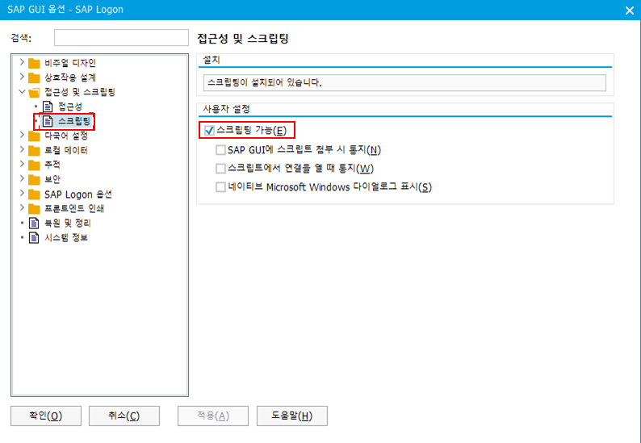
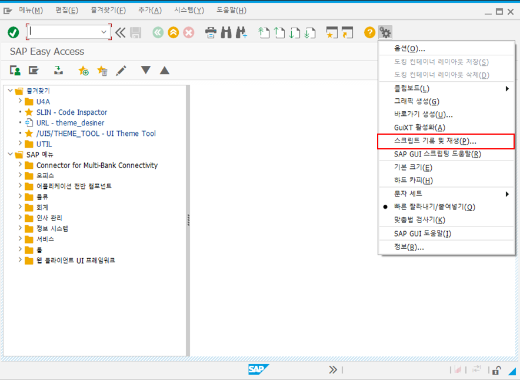
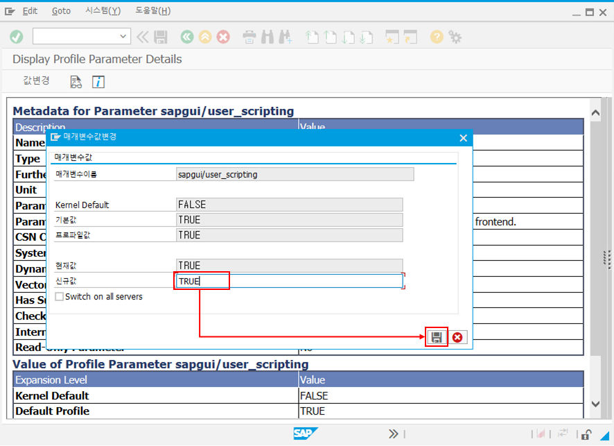
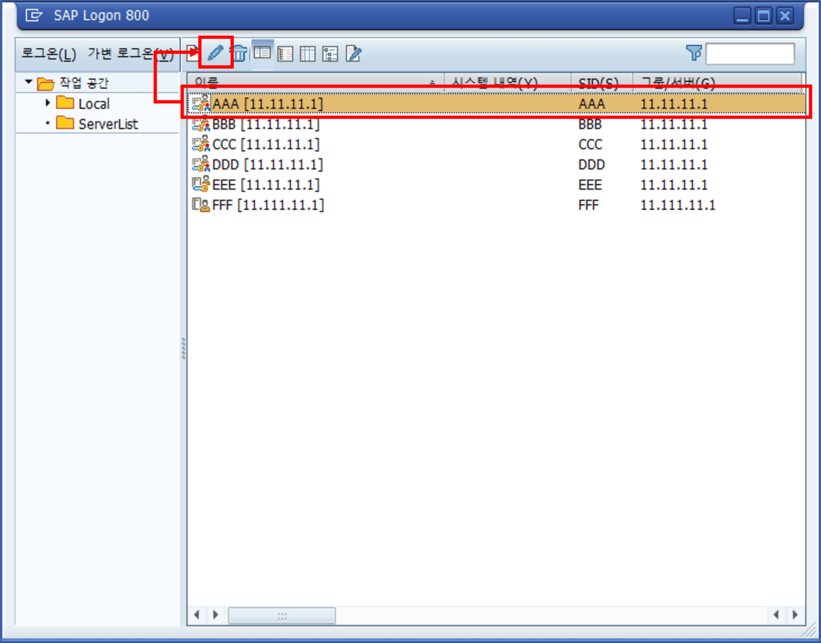
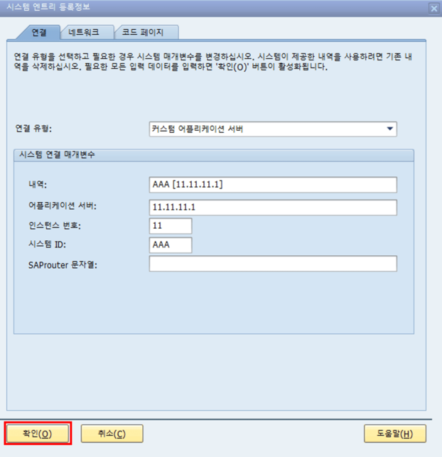

U4A Workspace(WS)에서 Controller Class 오류 발생 시 확인 메뉴얼
SAPGUI 옵션에서 Scripting 허용 여부 확인
1. SAPGUI 실행 시 등록된 서버가 조회되는 화면(SAP Logon Pad)에서 좌측 상단의 SAP 아이콘 클릭
2. "옵션" 메뉴 선택

3. 좌측 메뉴 트리에서 "접근성 및 스크립팅" 메뉴 폴더 펼치기
4. "스크립팅" 메뉴 선택.
5. 우측 "사용자 설정" 섹션에서 "스크립팅 가능" 체크 여부 확인 (체크되어 있어야 함)

SAPGUI 로그인 및 Scripting 가능 여부 확인
1. SAPGUI 실행 후 서버 로그인
2. Alt + F12 키를 누른 뒤, 메뉴에서 "스크립트 기록 및 재생" 메뉴 활성화 여부 확인 (활성화되어 있어야 함)

System Profile Parameter 확인
1. T-CODE: "RZ11" 입력하여 "프로파일 매개변수 유지보수" 화면 접속
※ 권한이 없을 경우 담당 BC에게 문의
※ 권한이 없을 경우 담당 BC에게 문의
2. "매개변수 이름" 입력 필드에 "sapgui/user_scripting" 입력 후 "조회" 버튼 클릭

3. 좌측 상단의 "값 변경" 버튼 클릭 → 팝업에서 "현재값"이 "TRUE"인지 확인

4. "TRUE"가 아닐 경우, "신규값" 입력 필드에 대문자로 "TRUE" 입력 후 저장

5. SAPGUI 및 U4A Workspace(WS) 전체 종료 후 재실행
SAPGUI 버전을 업그레이드 한 경우
Workspace 3.0 설치 이후에 SAPGUI를 업그레이드 한 경우에는 아래의 순서대로 조치한다.
1. 실행되고 있는 Workspace 3.0 프로그램 전체 종료
2. SAPGUI 실행 시, 기 등록된 서버를 선택 후, 상단의 수정 버튼 클릭

3. 확인 버튼 눌러서 저장하기

4. Workspace 3.0 프로그램 재실행
조치 후에도 실행되지 않을 경우
위 사항을 확인 및 조치한 후에도 문제가 해결되지 않을 경우 U4A R&D팀에 문의하세요.